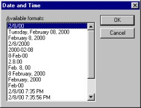
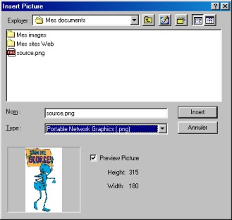

| |
| A propos Commandes Sommaire Pourquoi AbiWord? Généralités Environnement SDI Vs. MDI Installation Windows Linux Intel Linux PPC BeOS Intel BeOS PPC Solaris FreeBSD Les bases #1 Les bases #2 La saisie Le formatage Les paragraphes Les tabulations Les colonnes Les sections Les styles Insertion d'objet Imprimer Rechercher / Remplacer Personnalisation Raccourcis clavier abisource.com FAQ Crédits |
Insertion d'objets sous AbiWordAfin de rationaliser votre méthode de saisie de texte, AbiWord permet l'insertions d'objets prédéfinis. Insérer la date et l'heureAinsi, la date du jour et l'heure à laquelle vous saisissez votre document peut être insérée automatiquement sans avoir besoin de la saisir. Pour cela, positionner le curseur d'insertion à l'endroit où vous voulez insérer la date et l'heure puis aller dans le menu Insertion puis cliquer sur "Date et heure..." La fenêtre ci-dessous apparaît alors:  Cette fenêtre contient plusieurs formats de dates et d'heures. Choisissez le format souhaité en cliquant dessus. Une fois le format souhaité sélectionné valider en cliquant sur le bouton OK ou cliquer sur le bouton Annuler pour ne pas insérer de dates et d'heures. Insérer des caractères spéciauxOn peut sous AbiWord insérer des caractères spéciaux qui ne font pas partie des touches du clavier. Pour insérer un ou des caractères spéciaux, il faut positionner le curseur d'insertion à l'endroit où vous voulez insérer un caractère spécial puis :
Dans les trois cas, la fenêtre ci-dessous apparaît:
Tout d'abord, sélectionner la police de caractères
désirée en cliquant sur la petite flèche à droite du champ police
en haut de la fenêtre. Insérer une imageIl est possible sous AbiWord d'insérer une image afin d'illustrer et d'égailler vos documents. L'image à insérer peut être au format
Pour insérer une image au format *.png, *.bmp ou *.svg tout d'abord positionner le curseur d'insertion à l'endroit où vous voulez insérer l'image puis aller dans le menu Insertion puis cliquer sur "Image..." La fenêtre ci-dessous apparaît alors:  Sélectionnez tout d'abord le format de l'image à insérer en
cliquant sur la petite flèche à droite de la zone "Type".
Ensuite, allez rechercher le chemin où se trouve votre
image puis la sélectionner en cliquant dessus. AbiWord considère cette image insérée comme un caractère. Elle est donc "sensible"aux alignements, aux espacement, aux interlignes et aux tabulations. |